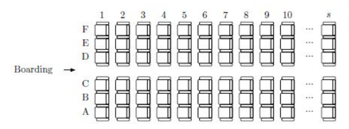

Peter是Byteland机场的经理。他的工作就是优化登机过程。Byteland的飞机有s排，编号1
到s。每排6个座位，标号A到F。

有n个乘客，他们排成队伍，一个个登机。如果第i个人坐在ri排，那么他登机的难度相当于
在他之前登机并且坐在第1...ri-1排的人的人数。登机总难度相当于所有乘客的难度的总和。
例如，如果有10个乘客，并且他们的座位是6A,4B,2E,5F,2A,3F,1C,10E,8B,5A,按排队顺序，
那么他们登机的难度为0,0,0,2,0,2,0,7,7,5，总难度为23。
为了优化登机过程，Peter想把飞机分成k个区域，每个区域必须是连续的几排座位。然后登机
过程就分为k个阶段。在每个阶段，挑出一个区域，在这个区域的乘客按照原来排队的顺序登机。
在上面的例子中，如果我们把飞机分成两块区域，5—10排和1—4排。那么在第一阶段，乘客
会依次坐6A,5F,10E,8B,5A；在第二阶段，乘客会依次坐4B,2E,2A,3F,1C。通过这样划分，登机总难
度变成了6。
已知乘客的排队顺序，帮助Peter把飞机分成k个区域，使登机总难度最小。